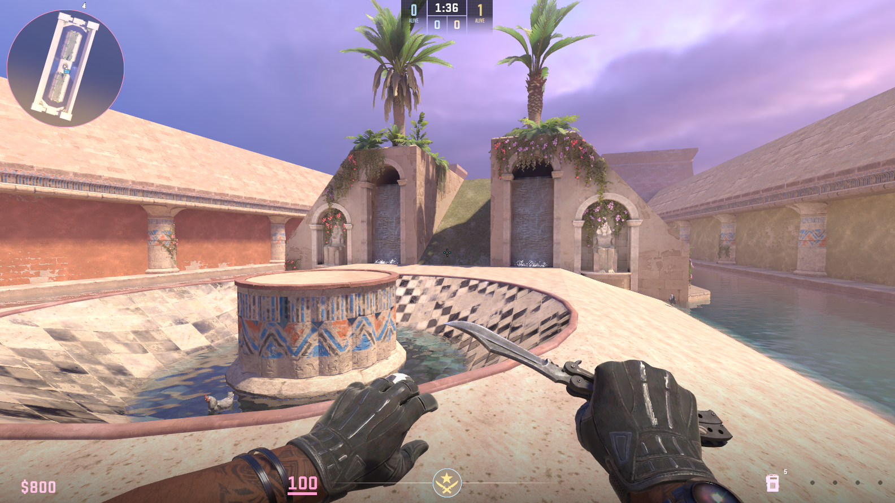

Willem's Portfolio
reversi
A hexagonal version of the classic game Reversi. Written in Java with Swing for the GUI.
Follows object-oriented design principles, employing patterns such as MVC
Features a CPU opponent with a minimax algorithm

A tool for the easy-viewing of grenades thrown in professional matches of Counter-Strike.
Parses Valve demo files for grenade information, then records in-game footage of grenade trajectory
Webserver runs on Flask with a REST API for queries
Responsive front end built with jQuery

decayboard
An anonymous an ephemeral internet bulletin board.
Features an administrator panel with moderation capabilities
Uses Flask and SQLAlchemy under the hood

willem.lol
* Repositories that 404 are currently private, but available upon request
Other works
de_pushcircle2
A Counter-Strike map for lovers of surfing and high-velocity engagements
